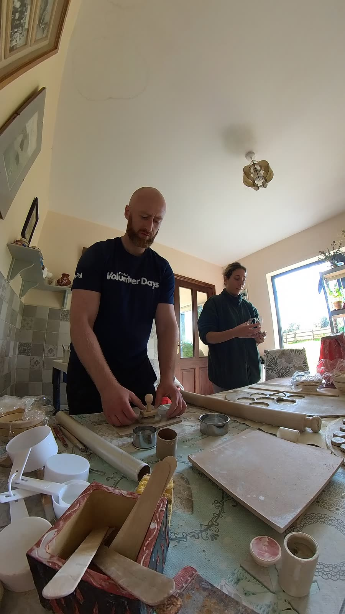

We wanted to give our wedding guests something small, useful and genuinely made by us. My father, Barry, has a pottery in Cork, so Ana and I began making a series of small ceramic pieces there. Each one is decorated with slips derived from soil collected near our two homes: Claraghatlea in Cork, and Alcalá de Guadaíra in Spain.
The materials begin on opposite sides of each piece and meet in the centre. It's a simple design, but it carries the story we wanted it to carry — the joining of two people, two families and two places.
We also have to make around a hundred of them, which has given the symbolism a useful encounter with manufacturing reality.
The process involves as much experimentation as symbolism. Local soil has to be collected, processed, mixed into a usable slip, and tested against the body clay and firing process — and the objects have to stay simple and repeatable enough that a meaningful project doesn't turn into a miniature production crisis.

The final object matters, but this is as much about the process and the family collaboration behind it as the result — my father's studio, Ana's hands and mine, and a hundred small proofs that two places can sit in the same piece of clay.